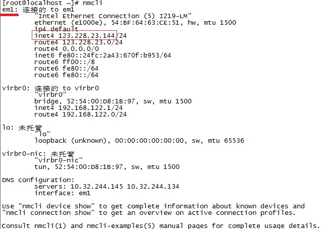
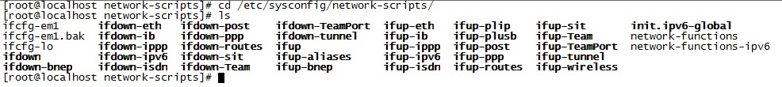
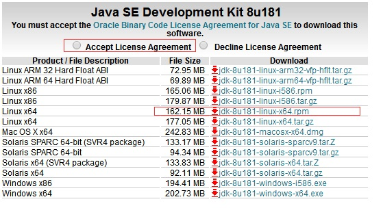

Linux CentOS 7 配置
简单初始设置
配置固定IP地址
若使用图形界面，配置方式与Windows相似，以下说明如何使用终端命令行进行配置。
使用nmcli命令查看当前连接的网路的网卡设备和ip，使用当前可用的IP地址作为固定IP。
如下设备是em1，ip是123.228.23.144

根据查到的设备名，修改其配置文件：
cd /etc/sysconfig/network-scripts/
vi ifcfg-em1

根据实际情况修改，供参考：
TYPE=Ethernet
PROXY_METHOD=none
BROWSER_ONLY=no
BOOTPROTO=static #使用静态ip
DEFROUTE=yes
IPV4_FAILURE_FATAL=no
IPV6INIT=yes
IPV6_AUTOCONF=yes
IPV6_DEFROUTE=yes
IPV6_FAILURE_FATAL=no
IPV6_ADDR_GEN_MODE=stable-privacy
NAME=em1
UUID=f85cd7cd-6b63-490e-ae0d-053dc7e0f11a
DEVICE=em1
ONBOOT=yes #启动网络
ZONE=public
IPADDR=123.228.23.144 #IP地址
PREFIX=24
GATEWAY=123.228.23.254
DNS1=10.32.244.145
DNS2=10.32.244.134
PEERDNS=no
NM_CONTROLLED=no
配置主机名
设置主机用以便简单标识当前服务器的作用。
//修改用户当前的主机
vi /etc/hostname
修改后重启生效。
//增加ip的别名，方便ssh连接
vi /etc/hosts
配置免密登录
#生成秘钥
ssh-keygen -t rsa
#复制公钥到需要免密的机器目录下
ssh-copy-id -i ~/.ssh/id_rsa.pub root@192.168.1.100
注意写用户名@ip。
SSH进行认证的过程中除了对用户目录有权限要求外，对 .ssh 文件夹和 authorized_keys 文件同样也要限制，如果日志中提示这两个的问题，可以通过如下方式进行修改：
chmod 700 /home/skyler/.ssh
chmod 600 /home/skyler/.ssh/authorized_keys
环境安装
安装JDK
首先获取想要安装的jdk的下载地址：

下载jdk，地址替换为上面获取到的地址。
wget --header "Cookie: oraclelicense=accept-securebackup-cookie" http://download.oracle.com/otn-pub/java/jdk/8u181-b13/96a7b8442fe848ef90c96a2fad6ed6d1/jdk-8u181-linux-x64.rpm?AuthParam=1536111689_b0a0712c5034d511302f6a0111d70f2b
下载完成后安装
yum localinstall jdk-8u181-linux-x64.rpm
配置环境变量
vi /etc/profile
在最后添加：
export JAVA_HOME=/usr/java/default/
export JRE_HOME=/usr/java/default/jre
PATH=$PATH:$HOME/bin:$JAVA_HOME/bin
使配置文件立刻生效
source /etc/profile
确认版本正确安装
echo $JAVA_HOME
java -version
配置是否启动图形界面
新版本的CentOS 系统里使用’targets’ 取代了运行级别的概念。系统有两种默认的’targets’: 多用户.target 对应之前版本的3 运行级别； 而图形.target 对应之前的5运行级别。
查看默认的target，执行：
systemctl get-default
开机以命令模式启动，执行：
systemctl set-default multi-user.target
开机以图形界面启动，执行：
systemctl set-default graphical.target
安装VNC server （可选）
VNC是用于远程控制的工具软件，即可以远程到服务器的图形界面，所以需要linux系统安装有图形界面才会起到作用。
服务器端需要安装配置VNC server。
yum install tigervnc-server -y #CentOS/RHEL 6开始版本的安装
yum install vnc-server -y #如果是CentOS/RHEL 5，则执行此命令
安装成功后设置vnc的连接密码
vncpasswd
随后需要创建VNC的配置文件，复制已有的模板来修改。
cp /lib/systemd/system/vncserver@.service /lib/systemd/system/vncserver@:1.service
cp /lib/systemd/system/vncserver@.service /lib/systemd/system/vncserver@:2.service
这里的vncserver@:1.service为root用户的登录配置文件，vncserver@:2.service为普通用户的配置文件
使用vi编辑复制出来的文件：
vi /lib/systemd/system/vncserver@:1.service
主要修改
[Unit]
Description=Remote desktop service (VNC)
After=syslog.target network.target
[Service]
Type=forking
# Clean any existing files in /tmp/.X11-unix environment
ExecStartPre=/bin/sh -c '/usr/bin/vncserver -kill %i > /dev/null 2>&1 || :'
ExecStart=/usr/sbin/runuser -l <USER> -c "/usr/bin/vncserver %i"
#上面一行修改为：ExecStart=/usr/sbin/runuser -l root -c "/usr/bin/vncserver %i"
PIDFile=/home/<USER>/.vnc/%H%i.pid
#上面一行修改为：PIDFile=/root/.vnc/%H%i.pid
ExecStop=/bin/sh -c '/usr/bin/vncserver -kill %i > /dev/null 2>&1 || :'
[Install]
WantedBy=multi-user.target
（关于vi的使用：按 i 进入编辑模式，修改好后按Esc退出编辑模式，输入：wq回车保存修改）
vncserver@:2.service修改同理，也可不配置。
修改完成后reload使文件生效：
systemctl daemon-reload
最后启动服务：
systemctl start vncserver@:1.service
设置开机启动：
systemctl enable vncserver@:1.service
配置防火墙：
防火墙可能会拦截掉远程连接，可以选择直接关闭防火墙，或者开放我们需要的连接端口，推荐后者。
Centos 7 防火墙配置和Centos 6的有很大不同，本文档只针对Centos 7 的配置。
查看防火墙的状态：
firewall-cmd --state
1.关闭防火墙（不推荐）
#临时关闭
systemctl stop firewalld
#禁止开机启动
systemctl disable firewalld
2.开放VNC可能用到的端口：
firewall-cmd --zone=public --add-service=vnc-server --permanent
#永久的把vnc-server服务加进防火墙
firewall-cmd --zone=public --add-port=5901-5905/tcp --permanent
#永久的把该端口添加进防火墙
firewall-cmd --reload #重启防火墙，让刚才的设置生效
Windows 连接到服务器
在Windows下，安装VNC Viewer，输入正确IP地址：

密码为之前设置的vncpasswd。